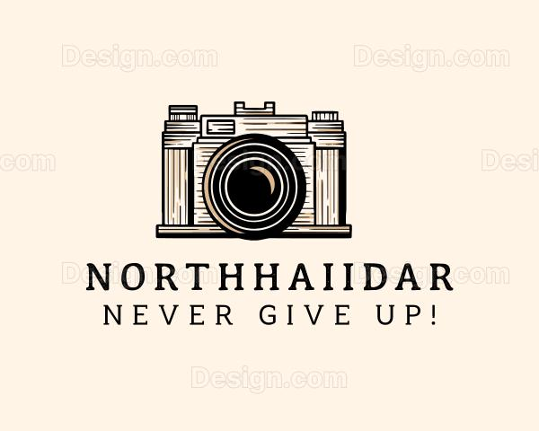

Home Booking Concert Lifestyle
stress less and enjoy the best
GET PERFECT PHOTOGRAPHY
MOMENTS WITH HAIIDAR
The best thing about a picture is that it never changes,even when the
people in it do
-Andy warhol
BOOK PHOTOSHOOT NOW
WHAT YOU WILL FIND HERE
ABOUT ME
Born and raised in Jos plateau state, Aliyu now resides in Lagos,
Nigeria.With a keen eye for detail, color, and natural light, he
creates original imagery for editorial and commercial clients across
the genres of travel & lifestyle, architecture, and still life. The
need to travel was instilled in him at a young age. Growing up in a
family of architects, artists and travelers, he is grateful to have
been immersed in an environment of creativity and curiosity from the
start. Before he learned how to make a photograph, he learned how to
be a traveler. Travel is when he is most engaged, most inspired and
most challenged. Learning bits of a new language and culture, getting
lost in winding cobblestone streets or narrow dirt paths, meeting
local people, and taking in every element of a moment - sights,
scents, sounds and feelings. This is when he is most alive.His
photography collection represents a year long journey of artistic
growth and technical development.Through various subjects and style
,each photograph demonstrates different aspect of composition
.lightning and visual storytelling. From intimate portraits to
sweeping landscapes,this portfolio showcases the versatility and
creative vision developed throughout the academic year.
CLIENTS; DON JAZZY,BURNA BOY,OMAH LAY , NICKI MINAJ, OLAMIDE, JAZZY BURGER, and more.
AVAILABLE FOR LOCAL + TRAVEL ASSIGNMENTS.
CLIENTS; DON JAZZY,BURNA BOY,OMAH LAY , NICKI MINAJ, OLAMIDE, JAZZY BURGER, and more.
AVAILABLE FOR LOCAL + TRAVEL ASSIGNMENTS.